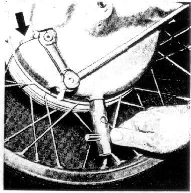

Check oil level every 3000 miles and,
if needed, refill to the lowest thread of the filler opening
(see arrow) with name-brand oil of the same type;
retighten filler screw (wrench size 8)
with allen wrench.
Figure 28
28

Change Oil while oil is at normal operating temperature, every 6000 miles but at least once a year. Unscrew oil drain plug (wrench size 19) and then oil filter plug (allen wrench size 8). After the oil has drained, replace drain plug tightly. Fill with new oil. Figure 28
Amount of oil
approximately 0.5 pints
oil level
lowest thread of filler opening
Type of oil
name-brand hypoid gear oil SAE 90